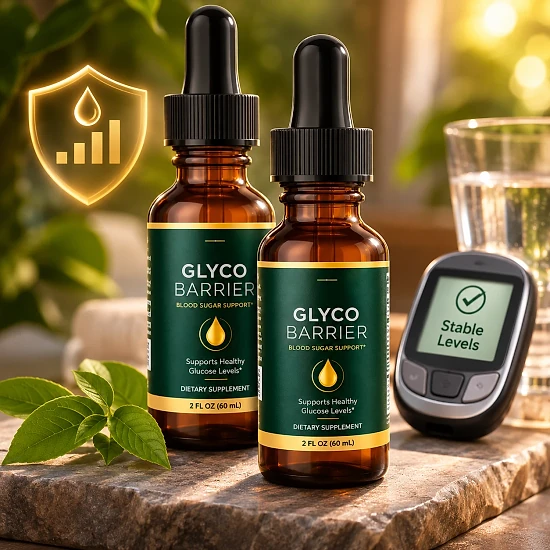
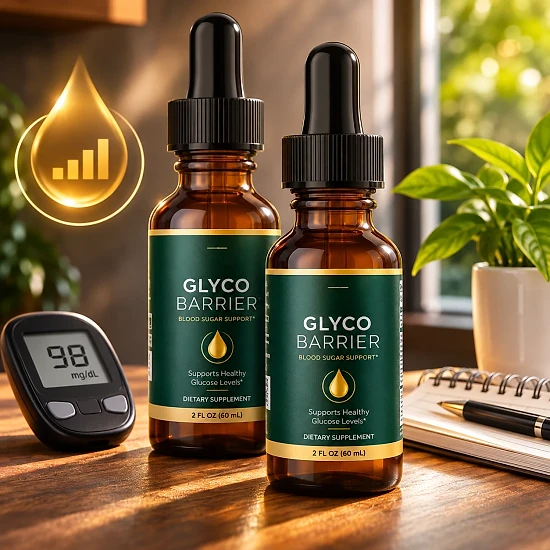

What Is Glyco Barrier And How Does It Work?
Glyco Barrier is a liquid dietary supplement in drops designed to support healthy glucose metabolism, balanced blood sugar, and steady daily energy for adults who feel that energy crashes after meals, sugar cravings, and afternoon fog have become part of their routine — through a simple, natural habit, without complicated plans.
It utilizes Chromium Picolinate combined with a 200 mg proprietary herbal blend of 20 ingredients, including Gymnema Sylvestre, Ginseng Root, Green Tea Leaf, Maca Root, Astragalus Root, and Coleus Forskohlii, to support metabolic wellness and a healthy glucose balance, helping the body find its natural metabolic rhythm throughout the day.
The idea behind Glyco Barrier, according to the official website, is that balance starts within. Chromium is a mineral involved in how the body handles glucose, Gymnema Sylvestre is a traditional herb used in wellness practices focused on healthy glucose metabolism, and the other botanicals were chosen to support energy and metabolic function.
The brand also highlights its liquid format. It explains that drops do not need to be broken down like capsules, and it presents the formula as a fast-absorbing way to take its botanicals every day.
With consistent daily use, the official website reports that many users notice more stable energy levels and improved daily wellness, with fewer crashes and cravings after meals. Individual results may vary, and the brand stresses that consistency is key.
From a practical standpoint, each bottle of Glyco Barrier contains 2 fl oz (59.14 mL), or 60 servings. Taken as directed, 1 mL twice a day, one bottle lasts about a month, and the drops can be taken with or without food.
According to the official website, Glyco Barrier is doctor formulated, non-GMO, and made under GMP-certified standards. It is a dietary supplement, not intended to diagnose, treat, cure, or prevent any disease, and it is meant to complement a healthy lifestyle and medical care, not replace them.
Glyco Barrier Ingredients
Every serving of Glyco Barrier combines Chromium Picolinate with a 20-ingredient herbal blend. These are the key ingredients the official website highlights:
Chromium Picolinate: A studied mineral form that helps the body maintain healthy blood sugar levels as part of normal glucose metabolism.
Gymnema Sylvestre Leaf Extract: A traditional herb historically used in wellness practices focused on healthy glucose metabolism.
Coleus Forskohlii Root Extract: Included to support metabolic function.
Green Tea Leaf Extract: An antioxidant-rich botanical associated with metabolic support.
Maca Root Extract: The Peruvian root traditionally used to support natural energy.
Cayenne Pepper Fruit Extract: A botanical linked to circulation, according to the brand.
The FAQ adds Ginseng Root and Astragalus Root to the list of blend ingredients. The 20 herbs share a 200 mg proprietary blend, so the amount of each one is not published. The brand describes the combination as a purposeful formula designed to support healthy glucose metabolism and daily metabolic balance, delivered in a fast-absorbing liquid that is easy to take every day.
Glyco Barrier Side Effects
According to the official website, Glyco Barrier is formulated with carefully selected natural ingredients that are generally recognized as safe for daily use. It is designed for adults who want a simple, balanced approach to metabolic support as part of their daily routine.
The formula is described as 100% natural and non-GMO, built on botanical extracts and chromium, and the brand states that it is made under GMP-certified quality standards, with the seals on its banner referring to a facility inspected by the FDA.
With no widespread reports of serious side effects, Glyco Barrier is generally considered a well-tolerated option. Still, it contains active botanicals such as Gymnema Sylvestre, Green Tea, Coleus Forskohlii, and Cayenne, so anyone sensitive to these ingredients should start carefully and stop if they notice any discomfort. Do not exceed the recommended dosage.
The official FAQ advises anyone with a medical condition or taking prescription medications — especially for blood sugar management — to consult a healthcare professional before use. This matters because the formula contains botanicals that may support glucose metabolism, and combining them with glucose-lowering medication should always be supervised. Pregnant or nursing women should also ask their doctor first.
Glyco Barrier Dosage
Glyco Barrier is meant to be taken every day, and it is designed to fit easily into a daily routine, making consistency simple and convenient. It comes as liquid drops, with no capsules to swallow and nothing complicated to prepare.
The recommended approach, according to the official website, is to take 1 mL (approximately 2 droppers full) twice daily — in the morning and in the evening — with or without food. Each bottle contains 2 fl oz (59.14 mL), or 60 servings, which equals about a month of use.
For best results, consistency is key. The official website explains that many users report more stable energy and better daily wellness with regular use, and the 60-day satisfaction promise gives you time to follow the routine for two full months. Individual results may vary.
There is no need for complex schedules or multi-step routines. The official website says the drops can be taken with or without food, so there is no need to plan them around meals, and they are designed to work alongside a balanced diet, regular movement, and good sleep.
As with any wellness product, it’s important not to exceed the recommended dosage. Store the bottle in a cool, dry place and keep it out of reach of children. Glyco Barrier works best when used regularly, combined with healthy daily habits.
Glyco Barrier – Refund Policy
You can order Glyco Barrier with confidence, knowing that every purchase is protected by a 60-day satisfaction promise, counted from the original purchase date. This gives you time to try the drops and decide if they deliver the support you expect.
According to the official refund policy, customers who are not fully satisfied should contact customer support within 60 days of purchase through the contact page. All bottles must be sent back, whether they are empty or unopened, together with any bonuses or gifts, and the return shipping is paid by the customer unless the wrong or a damaged item was sent.
How the refund process works: Contact support with the subject line “Refund Request” and your order number. The team reviews the request and sends return instructions; the package must then be shipped within 7 calendar days with a trackable method, the packing slip inside, and the tracking ID sent to support. The policy also mentions an optional partial refund in some cases, with no return required.
Customer Support Contact Information: the contact page is listed on the official website, and the return address is in Aurora, Colorado, USA.
Refund Processing Time: Inspection and approval usually take 3 to 5 business days after the return arrives, and the refund then reaches the original payment method in 5 to 7 business days for credit cards or 5 to 10 for debit cards.
This refund policy is designed to give customers a clear and transparent experience when trying Glyco Barrier.
Glyco Barrier Customer Reviews
-
John R.Verified Purchase – 6 Bottles
“Two weeks on Glyco Barrier and the afternoon crashes stopped. Three weeks in, the cravings were manageable for the first time in years. I don't dread mealtimes anymore. That's not a small thing.”
-
Linda K.Verified Purchase – 6 Bottles
“Glyco Barrier is the first supplement that made me feel like I was actually getting ahead of it — not just hoping for the best. My energy after meals is steadier. My mornings are clearer. I've already put my sister on it too.”
-
Richard T.Verified Purchase – 6 Bottles
“I changed nothing else in my diet. Nothing else in my routine. Just added this. Still taking it. Still seeing it work.”
Glyco Barrier – Where To Buy
Glyco Barrier is sold through its official website, so if you decide to try it, it's important to be careful about where you purchase it. The official website is the only sales channel the manufacturer lists, and it does not point to marketplaces such as Amazon, eBay, or Walmart.
Listings on third-party platforms may look similar but cannot be verified as authentic, raising concerns about safety, quality, and ingredient freshness. Products purchased outside the official source may not be covered by the 60-day satisfaction promise.
For this reason, most customers recommend purchasing Glyco Barrier only through the official website. Buying directly from the official source ensures you receive the authentic original product, with access to customer support and the full guarantee. According to the brand, every order is a one-time purchase with no autoship.
To avoid counterfeit batches and ensure maximum quality, always verify that you are ordering from the official Glyco Barrier website before completing your purchase.
To ensure you’re getting the authentic product, most users choose to visit the official website.
Is Glyco Barrier A Scam?
Based on what the official website discloses, Glyco Barrier does not appear to be a scam. It is a real product, sold through an established retailer, and formulated to support healthy glucose metabolism, blood sugar balance, and steady energy as part of a consistent daily routine.
The ingredients used in Glyco Barrier — Chromium Picolinate, Gymnema Sylvestre, Green Tea, Maca Root, Coleus Forskohlii, Ginseng, and Astragalus, among others — are well known in the metabolic wellness field, although the 20 herbs share a proprietary blend and the amount of each one is not published.
In addition to its formula, Glyco Barrier is, according to the official website, doctor formulated, non-GMO, and made under GMP-certified standards, and the brand lists a return address in Colorado and a customer support contact page.
Customers quoted on the official website describe steadier energy after meals, fewer afternoon crashes, and more manageable cravings. Results vary from person to person, and no supplement can promise a specific outcome or replace the care of a doctor, which is why realistic expectations and consistent use matter.
Glyco Barrier is backed by a 60-day satisfaction promise, and orders are one-time purchases with no autoship, recurring charges, or hidden subscriptions. This policy underscores the manufacturer's commitment to customer satisfaction and product integrity.
If you're looking for a simple daily liquid supplement to support healthy blood sugar balance and steady energy, Glyco Barrier is worth considering — especially when purchased directly from the official website.
For those who want to verify product details or check current availability, the official Glyco Barrier website remains the safest option.

Check Availability On Official Website